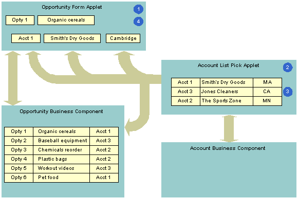

Example of How Data Flows in a Pick Applet
The following figure describes how data in the pick applet typically originates from a different business component than the business component that supplies data to the originating applet.
Explanation of Callouts
The following steps occur in this example:
-
The user enters information for the Organic Cereals opportunity in the Opportunity Form applet, and then clicks Select.
-
Siebel CRM displays the Account List pick applet and displays rows from the Account business component.
-
The user chooses Account 1, Smith’s Dry Goods, and then clicks OK.
-
Siebel CRM enters Account data for Smith’s Dry Goods into the Opportunity Form applet.
A dynamic list maintains the foreign keys that facilitate a join relationship. In the opportunity and account example, a foreign key in the Opportunity business component identifies the account for each opportunity. If the user chooses an account in the pick applet, then Siebel CRM enters data into this foreign key field. This choice associates the account with this opportunity for future use by the join that uses the foreign key. For example, if the user chooses a record in the pick applet, then it copies values in some list columns in the chosen record to corresponding list columns in the originating applet. In this example, the user chooses a parent account for an account record.